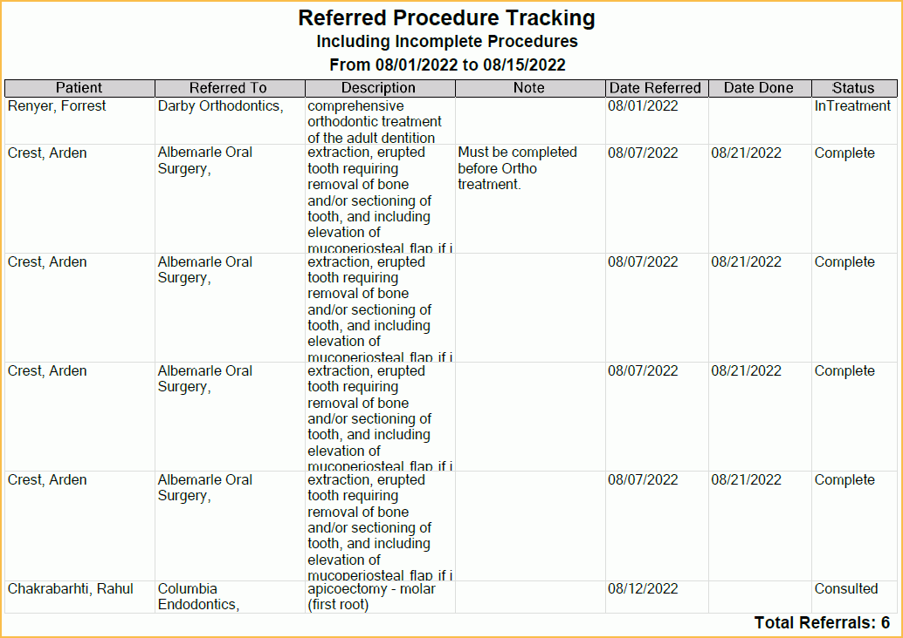

Referred Procedure Tracking Report
Track and manage referred procedures using the Referred Procedure Tracking Report.
In Standard Reports, in the Lists section, click Referred Proc Tracking.

Also see Referrals.
To control user access to this report, see Report Setup: Security Permissions.
Report Filters
Date From/To: Type in a date range to filter the report. Filters by Date Referred.
Show Completed Procedures: Check to include referred out procedures that have a Date Done (Date Proc Completed on Edit Referral Attachment window).
Referred Procedures Grid
After setting the report filters, click Refresh to update the results in the Referred Procedures grid. Click Print to print directly to the default printer. The printout will include the same results grid as on-screen and will include an additional line for the Total Referrals on the final page of the printout below the grid.
Double-click a row to open the Edit Referral Attachment window to view further details or edit the referral.
Below is an example of the printout and an explanation of the grid columns.
- Patient: Last name, preferred name, and first name of patient attached to referral.
- Referred To: Name if referral source (e.g., referred to provider).
- Description: Procedure Code description of referred procedure.
- Note: Patient note from Edit Referral Attachment window.
- Date Refer: Date from Edit Referral Attachment. Defaults to the date the referral was created.
- Date Done: Date Proc Completed from Edit Referral Attachment.
- Status: Status (if referred out) from Edit Referral Attachement.